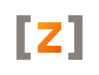

Zig 오렌지 #f7a41d · 사이트 다크 배경 #0d0a07 기준. 각 시안을 다크/라이트 · 파비콘(16·32)~로고(48·128) · 워드마크 락업으로 표시.
라운드 사각 타일 + 각진 Z 음각. swc/oxc/esbuild 계열과 어울리는 정석 마크. 16px 파비콘에서 가장 또렷함.
투명 배경 + 오렌지 그라디언트 볼트. Zig 네이티브 속도/컴파일 에너지. 꼭지 평평 잘림 → 단일 꼭짓점으로 수정함. 작은 크기에선 디테일 손실 주의.
각진 브래킷 사이 오렌지 Z. 소스→출력 트랜스파일/번들러 의미 직접 은유. (컬리 { }는 16px에서 깨져 각진 브래킷으로 구현 — 원하면 컬리로 재작업.)

육각 칩 + Z 음각. "Zig 네이티브 / 실리콘" 뉘앙스. 모노그램(①)과 같은 Z 글리프라 패밀리 일관성, 타일보다 기술적 인상.
두 겹 셰브론 — 컴파일 fast-forward / 속도. Z 없이 추상적, 매우 단순해 16px도 또렷. 단점: 미디어 FF로 읽힐 여지.
Z 글리프 2겹 오프셋 — 모듈을 청크로 묶는 번들러 정체성. ①과 같은 글리프의 레이어드 변형, 깊이감.
①의 경량 변형 — 타일은 stroke만, Z는 솔리드. 미니멀·가벼움. 다크 배경에서 또렷, 16px에선 테두리가 얇아질 수 있음.
이니셜 모노그램 관성을 버리고 로고가 전달할 가치(변환·속도·번들링) 또는 글자 없는 순수 형태로 다시 잡은 4종. 워드마크 "ZNTC"는 텍스트로 병기.
raw 코드 라인 → 변환 화살표 → 묶인 출력 블록. 트랜스파일·번들 in→out 을 직설적으로. 도구 본질 전달력 최고.
모션 잔상 + forward 화살촉. Zig 네이티브 속도 에너지. 글자 없이 추상적, 작은 크기에서도 또렷. (vite 계열 톤)
컨테이너 안에 모듈 타일이 차곡 패킹. 번들러 핵심 기능 은유. 의미 명확, 16px에선 stroke 얇아질 수 있음.
글자·은유 없는 순수 형태 — 라운드 타일에 forward 노치 음각. 가장 중립·확장적, "ZNTC" 워드마크와 페어. (esbuild/oxc 톤)
흩어진 "장면"이 아니라 16px에서도 한 글리프로 읽히는 단일 심볼. ⑰⑱은 글자는 아니지만 CLI/코드 텍스트 느낌 캐릭터(`>_`, `=>`).
라운드 타일에 볼트 음각 — 앱아이콘처럼 닫힌 한 덩어리. ②볼트의 enclosed 버전, 파비콘 강함.
3면 아이소메트릭 큐브 — 묶인 빌드 산출물 / 네이티브. 무채색 단순, 매우 아이코닉.
회전 대칭 3날 — 변환/처리 모션. 역동적, 패턴화 가능. 16px에선 날 끝 디테일 주의.
재생 삼각을 가로로 슬라이스 — 속도/실행. 극단 미니멀, 어느 크기든 또렷.
C형 링 — 빌드 사이클/처리. 단일 stroke, 모노톤 전환 쉬움. 16px에선 두께 확보 필요.
>_터미널 프롬프트 — CLI 트랜스파일러 정체성 직설. 글자 아닌 텍스트-캐릭터, 개발자 코드감 최고.
=>JS/TS 변환 코드 시그니처. 텍스트-캐릭터, 트랜스파일 의미 + 단순 형태.